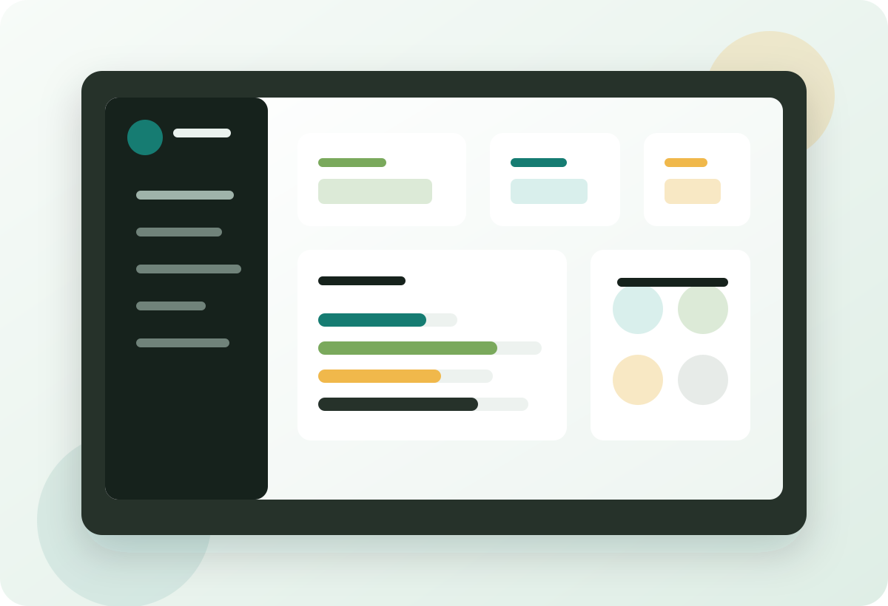

Informacion desordenada
Socios, pagos y asistencia quedan repartidos entre cuadernos, hojas de calculo y conversaciones.
Plataforma flexible para organizaciones
Administra socios, asistencia, cuotas, multas, finanzas y reportes desde un solo lugar, adaptable a organizaciones comunitarias, deportivas, culturales, religiosas y formativas.

Adaptar presentacion a:
El problema
Socios, pagos y asistencia quedan repartidos entre cuadernos, hojas de calculo y conversaciones.
Cuesta saber quien asistio, que cuotas estan pendientes y como se mueven los recursos.
Los dirigentes pierden horas en tareas repetitivas que podrian automatizarse.
Solucion
Registro de integrantes, estados, datos de contacto y roles internos.
Control rapido de reuniones, entrenamientos, actividades o ceremonias.
Seguimiento de ingresos, egresos, cuotas, multas y saldos pendientes.
Informacion clara para directivas, socios y procesos de rendicion.
Impacto
Reduce tiempo administrativo y errores manuales.
Mejora la transparencia financiera y la confianza interna.
Permite que organizaciones pequenas accedan a herramientas digitales profesionales.
Demo para evaluacion
Esta version demostrativa permite conocer las principales funciones de NexoComunidad sin bloquear la navegacion con solicitudes previas.
URL sugerida: nexocomunidad.pilageweb.cl
Usuario demo: demo@nexocomunidad.cl
Contrasena: Demo2026
Entrar a la demoProyeccion
Configuracion inicial segun el tipo de organizacion, sus miembros y reglas internas.
Modelo SaaS accesible para comunidades pequenas y escalable para instituciones con mas miembros.
Lenguaje, modulos y terminos pueden ajustarse a cada rubro sin reconstruir el sistema.